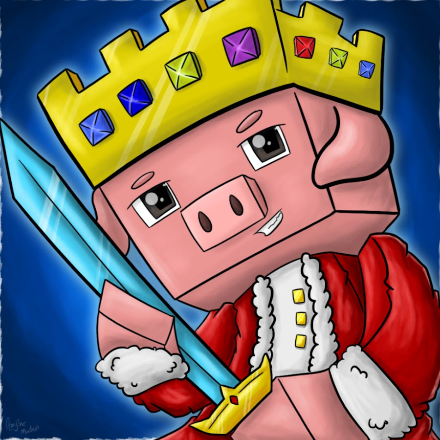

Even with all of his struggles of having to deal with both stage 4 cancer, and having to run a Youtube channel, he was able to make it a full year while also raising over half a million dollars for caner research. Now it is my turn to make a move. I am making this website to promote research towards sarcoma cancer, for I do not want any other families to experience the same loss as Technoblade's family has. I have provided a link for you to donate to if you wish. But if don't, I also appreciate you at least reading this and learning more about cancer and what you could do.
© Technoblade's profile picture as of 2022